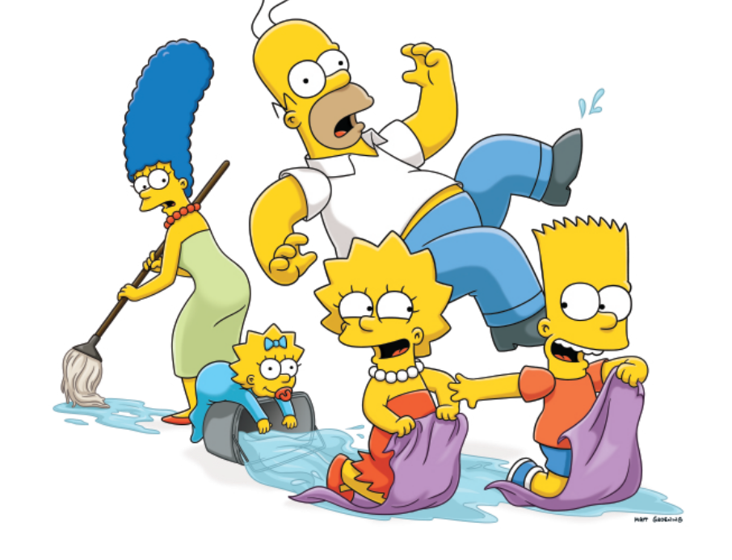

Sinopse
Os Simpsons é uma icônica série animada que acompanha a vida da família Simpson, composta por Homer, Marge, Bart, Lisa e Maggie, na cidade de Springfield. Com humor inteligente e situações absurdas, a série conquistou fãs ao redor do mundo ao longo de suas várias temporadas. Criada por Matt Groening, a série começou como uma série de curtas de 30 segundos antes de se tornar um programa completo em 1989. Desde então, tem sido aclamada pela crítica e é conhecida como uma das séries animadas mais longas e influentes da história da televisão.
